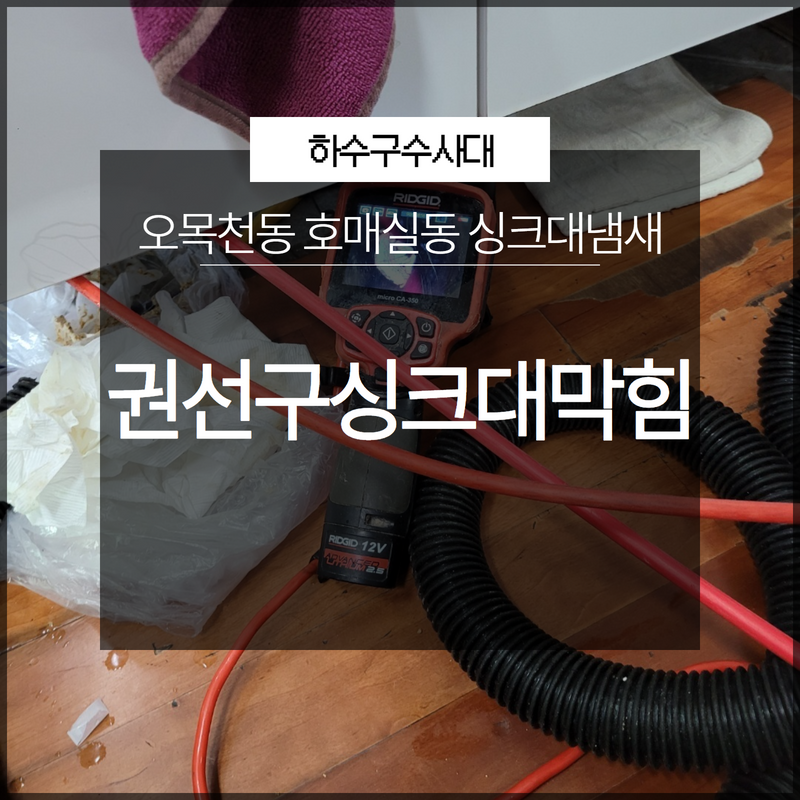
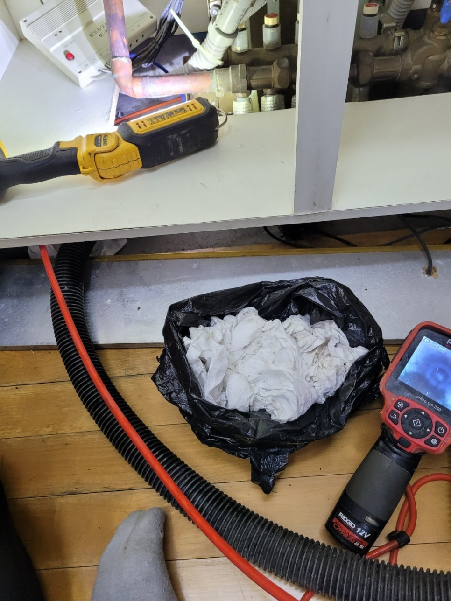
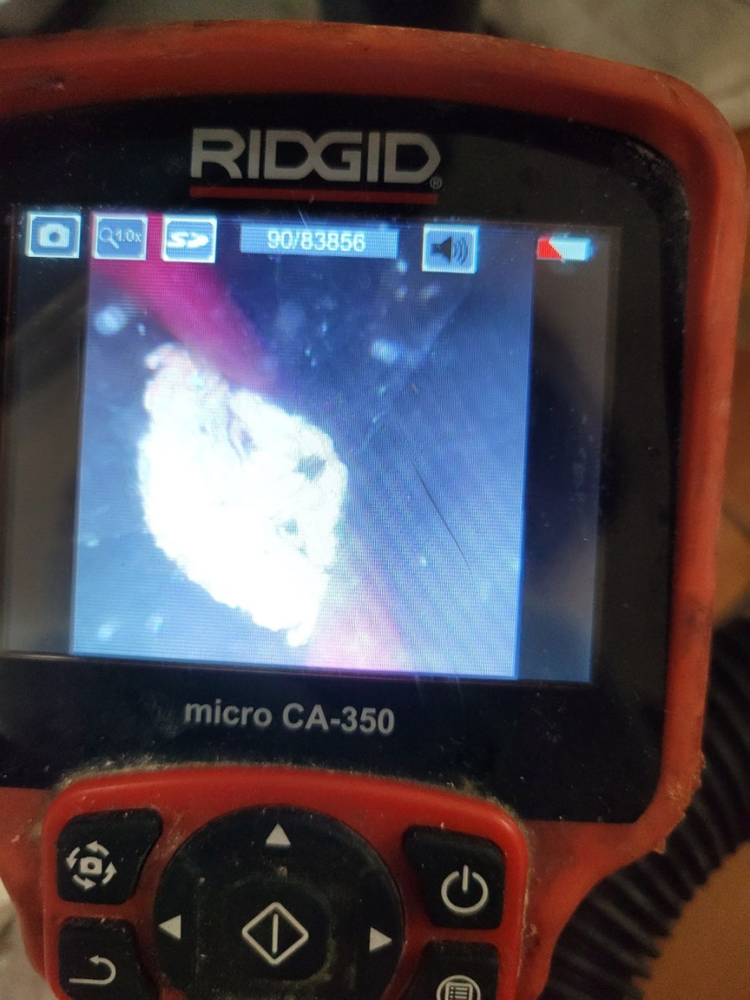
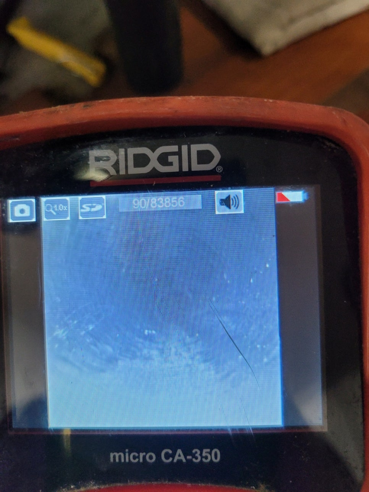
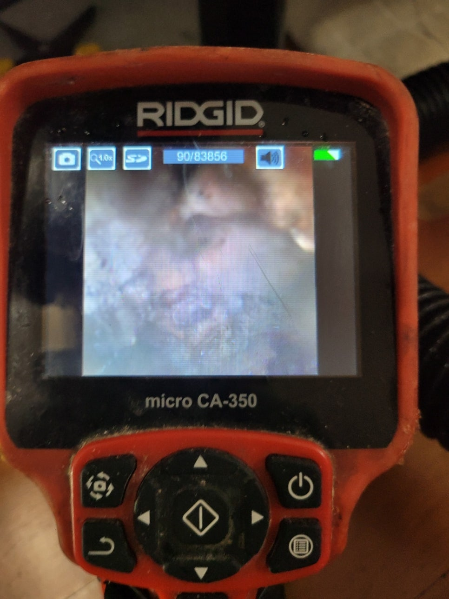

🏠 권선구싱크대막힘 오목천동 호매실동 싱크대냄새 확실하게 케어할 수 있어요!
수원 싱크대막힘 전문 시공 후기

📋 작업 개요
- 위치: 수원
- 서비스 유형: 싱크대막힘, 하수구막힘, 배관막힘, 역류해결, 뚫는업체, 배관청소
- 작업 일시: 2022. 12. 26. 0:26
- 업체명: 하수구수사대 (010-5615-2118)
🔍 문제 상황
안녕하세요 하수구수사대입니다.
우리가 일상생활 속에서 버리는 물을 원활하게 사용하는 공간이 바로 배관이라고 할 수 있습니다. 모든 배관은 눈에 보이지는 않지만 막힘없이 돌아가야 생활의 불편함이 생기지 않는 것이라고 할 수 있습니다. 그중에서 우리 생활에 가장 필요한 곳 중에 하나가 바로 화장실과 싱크대라고 할 수 있습니다. 특히 싱크대 같은 경우는 많은 음식물을 다루는 곳인 만큼 알게 모르게 음식물 찌꺼기들이 내부로 흘러들어가는 경우가 많이 발생하게 될 수 있습니다.
이로 인해서 배관 막힘이 생기게 되는 경우가 있는데요 이번에 방문한 현장은 권선구싱크대막힘 오목천동 호매실동 싱크대냄새로 인해 방문을 한곳으로 심각한 악취를 동반한 막힘의 발생으로 연락을 주신 곳이었습니다. 현장의 해결 후기를 통해서 막힘의 원인과 해결 현장의 상황을 알려드리도록 하겠습니다.
권선구싱크대막힘 오목천동 호매실동 싱크대냄새로 문의를 해주신 고객님께서는

🔎 원인 분석
💡 전문가 진단: 권선구싱크대막힘 오목천동 호매실동 싱크대냄새로 문의를 해주신 고객님께서는
어느 날부터 싱크대에서 물이 제대로 배수가 되지 않게 되면서 상당한 불편함을 느끼고 계신 상황이었습니다. 그러다 완전히 막힘이 발생을 하면서 조금씩 문제가 더 심각해지기 시작했고 더 늦기 전에 해결을 하기 위해서 급히 전문 업체를 찾아서 작업을 의뢰해 주셨습니다.
배관 막힘 같은 경우는
대부분 외관상으로 보기에는 아무런 문제가 없어 보이는 경우가 많지만 배관 내부를 내시경 등을 이용해서 살펴보게 되면 상당히 심각한 상황들이 되고 있다는 것을 알 수 있게 됩니다. 권선구싱크대막힘 오목천동 호매실동 싱크대냄새 이번 현장 역시도 비슷한 상황이라고 할 수 있는데요 평소에는 아무 문제 없이 사용을 하던 하수구가 갑자기 막히게 되거나 역류까지 하는 상황이 발생하게 된다면 불편함과 당황스러움이 많으실 것입니다.
최근에는 시중에서 셀프로 배수구를 뚫거나 청소를 할 수 있는 다양한 약품들이 많이 나오고 있다 보니 급한 마음에 셀프로 해결을 해보고자 시도를 하시는 분들이 많이 있습니다. 혼자서 해결을 한 것처럼 보일 수는 있지만 원인이 해소되지 못하는 경우가 많기 때문에 오히려 상황을 악화시키는 경우가 발생할 수 있습니다.

🔧 작업 과정
그러므로 배관막힘의 문제점들이 조금씩 발견이 되는 경우에는
신속하게 하수구막힘 전문업체에 의뢰를 해서 해결을 하는 것이 좋습니다. 대부분 셀프로 해결을 하는 방법들의 경우는 배관 속의 이물질은 그대로 있고 단순히 물이 배수될 정도로만 해결을 하는 경우가 많기 때문에 근본적으로 배수관을 막고 있는 원인을 찾아서 해결을 하기 위해서는 전문 장비의 도움이 필요하다고 할 수 있습니다.
그러므로 이러한 배관 작업을 할 때는
전문 업체를 통해서 빠르고 편리하게 해결을 하시는 것이 필요하다고 할 수 있습니다. 전문 업체는 배수구 관련의 문제를 한 번에 해결할 수 있는 장비들을 가지고 있기 때문에 고객님들의 만족도도 크다고 할 수 있습니다. 본격적인 하수구막힘 문제를 해결하기 위해서 하수구를 막고 있는 원인이 무엇인지를 알아보는 작업을 하였습니다.
배관 내시경 카메라를 넣어서 확인을 해보기로 했는데요 배관 내시경 같은 경우는 우리가 육안으로 확인하기 힘든 배관의 내부 상태를 카메라를 이용해서 확인할 수 있는 장비입니다. 배관 내부는 여러 가지 이물질들이 발견되었는데요 각종 음식물 찌꺼기와 기름때들을 제거하기 위해서 전문 장비를 이용해서 부수고 흡입하는 과정을 반복하였습니다.
배관 막힘의 원인 해결을 해서


✅ 작업 완료
말끔하게 해결해 드린 현장이었습니다.
경기도 수원시 권선구 매송고색로533번길 7 상가동 B층 01호 298




⚠️ 주방 싱크대 배관 막힘 예방 수칙
- ✅ 기름기가 묻은 식기나 프라이팬은 설거지 전 키친타올로 반드시 기름때를 닦아내세요.
- ✅ 주기적으로 싱크대 개수대에 뜨거운 물을 가득 받아 한 번에 내려 배관 내부 기름을 씻어내세요.
- ✅ 배수구 거름망을 미세한 필터로 사용하시고 음식물 찌꺼기가 틈으로 새어 들지 않게 관리하세요.
- ✅ 베이킹소다와 식초를 뜨거운 물과 함께 일주일에 한 번씩 부어주면 배관 살균과 막힘 예방에 좋습니다.
💡 핵심 정리
- 확실한 장비 작업(내시경 점검 및 샤프트 스케일링)으로 원인을 뿌리 뽑습니다.
- 작업 후 1년 이내에 동일한 부위 재발 시 100% 무상 A/S 서비스를 보장합니다.
- 서울 · 경기 · 인천 전 지역에 24시간 언제든 긴급 출동할 수 있도록 항시 대기 중입니다.
❓ 자주 묻는 질문 (FAQ)
🚨 수원 싱크대막힘 문제로 고민이신가요?
정확한 원인 진단과 확실한 시공으로 재발 없는 해결을 약속드립니다.
24시간 긴급 출동 | 서울 · 경기 · 인천 전지역 | 1년 내 재발 시 무상 A/S